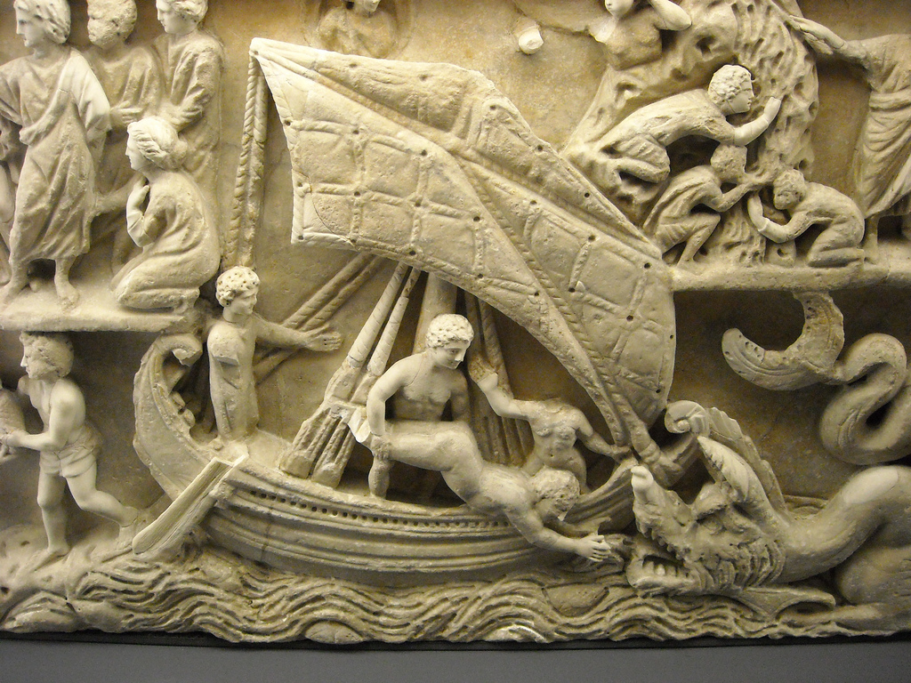
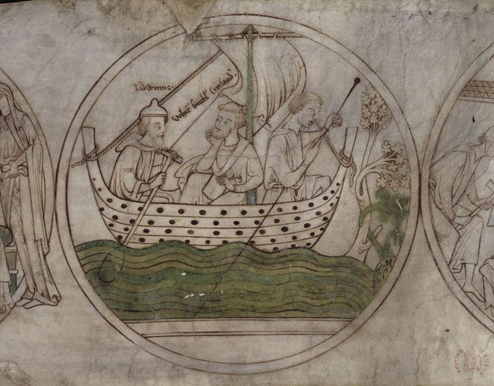
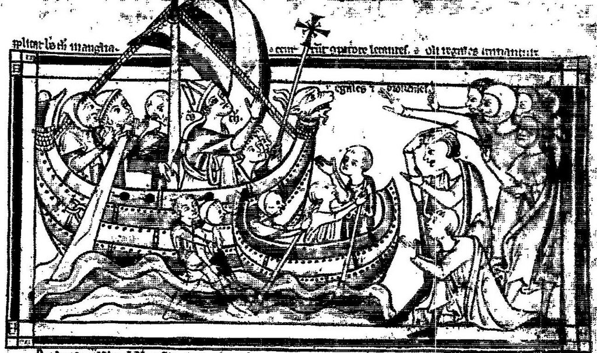
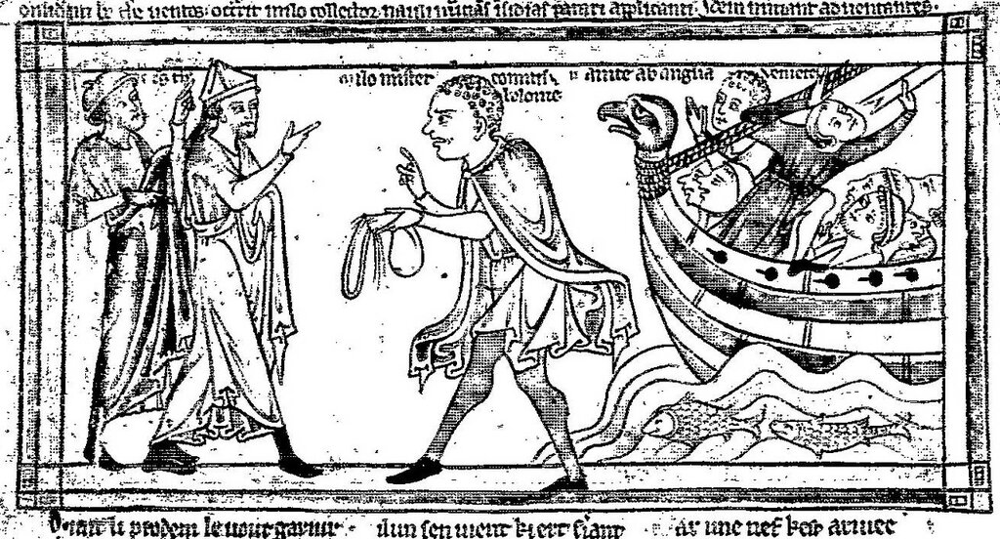
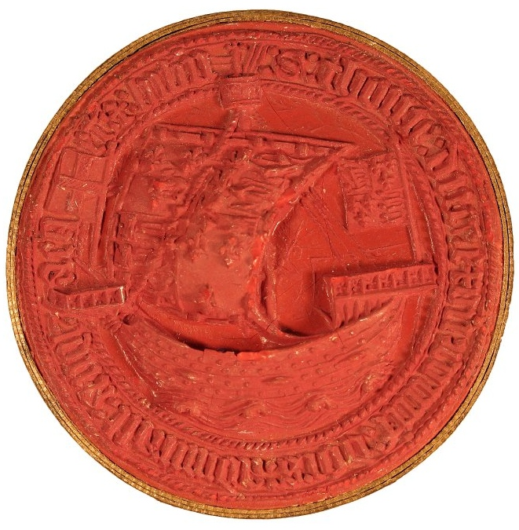
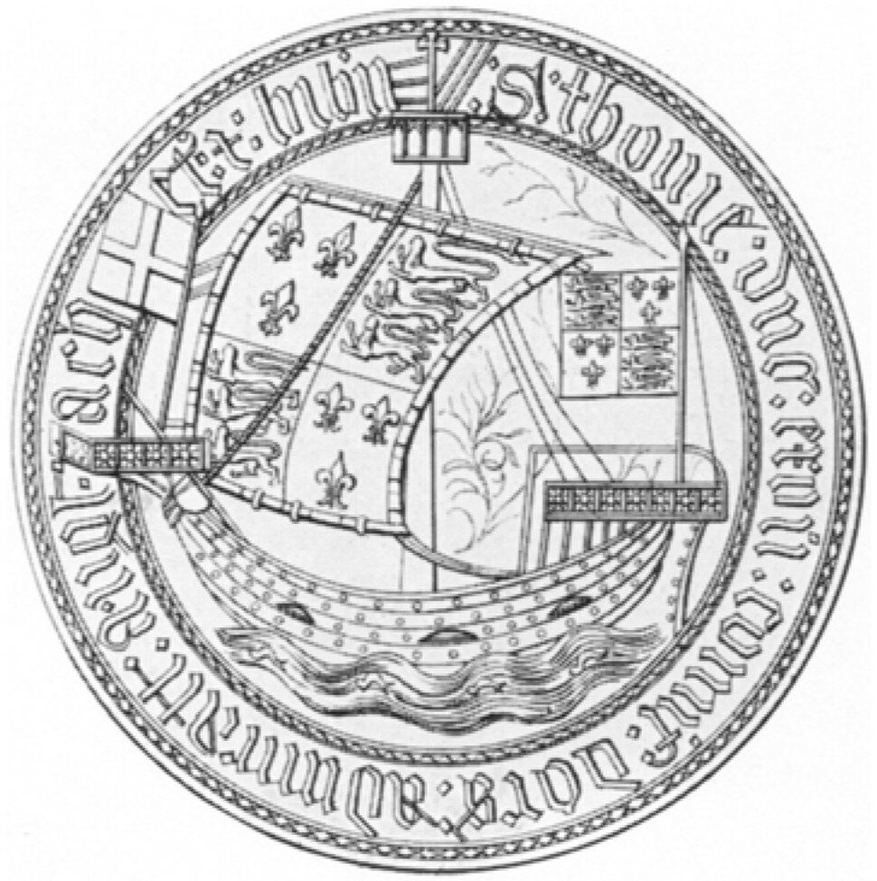
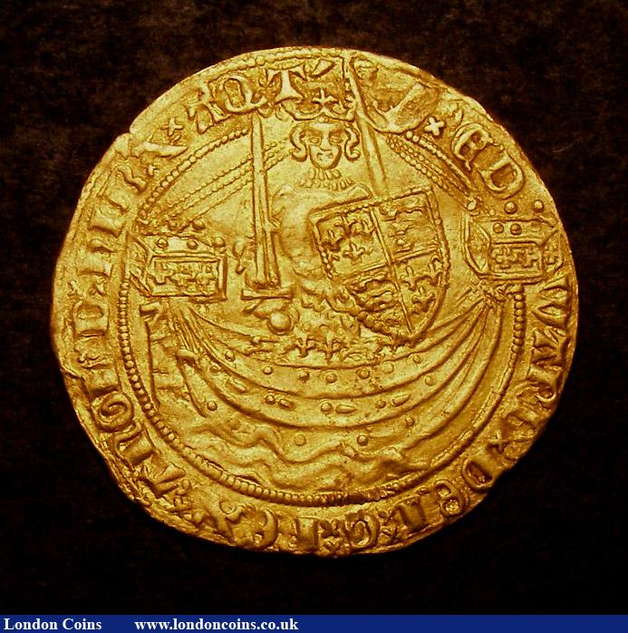
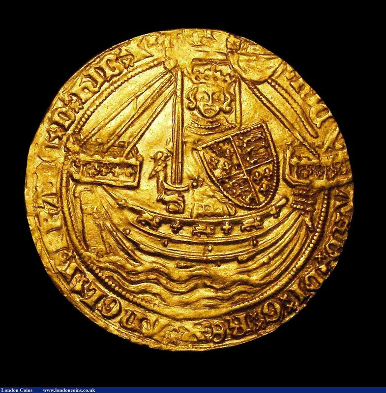
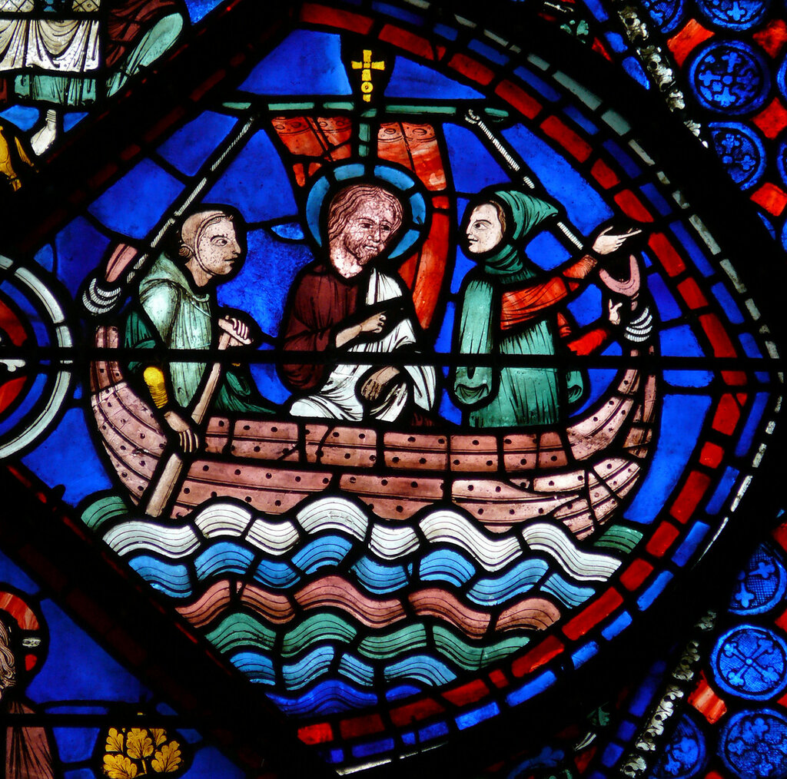

Фока-штаг
Не тут, так там; коль не мытьем удастся, так катаньем.
А. Толстой. Царь Федор Иоаннович.
Рассмотрим теперь еще один вариант возможного предназначения тросовых шлагов на верхней части форштевня. Тот факт, что фока-штаги (снасти, удерживающие фок-мачту спереди) могут крепиться на верхней части носовой оконечности, не удивителен и примеры тому известны с давних времен. Рассмотрим, например, барельеф, изображающий сцену из библейской истории Ионы, на христианском саркофаге III века нашей эры, который находился первоначально в Латеранском музее, а позже – в музее Ватикана.

"Иона в море" (Фрагмент) - "Jonah Sarcophagus" - около 300 г н.э. - Vatican Museum Фото Karl, flickr
Видно, что фока-штаг дважды завернут вокруг форштевня.
Замечательное изображение крепления фока-штага на штевне мы находим в декоративном медальоне последней четверти XII- первой четверти XIII в. из свитка Harley Roll Y.6, посвященного Святому Гутлаку Кроуландскому (Saint Guthlac of Croyland), который хранится в Британской библиотеке

Аналогичную картину крепления фока-штага мы видим на двух иллюстрациях из рукописи 1230-1260 гг. Vie de Saint Thomas de Cantorbéry (факсимиле опубликовано в книге Meyer «Fragments d’une vie de Saint Thomas de Cantorbéry» (1885)


Здесь фока-штаг, как, впрочем, и бакштаг, завернуты вокруг соответствующих штевней пятью шлагами.
На печатях и монетах эпохи, когда появились изображения тросовых шлагов вокруг форштевня, фока-штаги также изображены. Но крепление их отличается от приведенного выше. За некоторыми небольшими исключениями, самым выдающимся из которых является печать адмирала Томаса Бофорта (1416 г.)

Вот ее изображение на отличной гравюре Pettigrew из статьи " On the Seals of Richard, Duke of Gloucester, and other Admirals of England" (Collectanea Archaeologica, I. 1862, pl. xv., fig. 2)

Одна деталь может зародить сомнения в наших головах: почему фока-штаг – это мощный толстый трос, в то время как шлаги вокруг форштевня явно наложены тросом значительно меньшего диаметра. Конечно, возможно это просто ошибка художника.
Но на большинстве монет и печатей мы не имеем такой четкой картины.
На приведенных ниже двух изображениях золотых монет ясно видно, что фока-штаги идут не непосредственно к верхней части форштевня, а к центру боевой платформы, где, видимо, и крепятся. А расположенные ближе к корме тросовые шлаги вокруг форштевня кажутся вовсе не связанными с этими снастями.

Полунобль Эдуарда III.

Нобль Ричарда II
Таким образом, связь фока-штагов с нашим гаджетом опять куда-то ускользает и загадка наша по-прежнему не находит своего однозначного решения.
К слову сказать, не только фока-штаги завертывали вокруг форштевня, но и брасы, как мы можем заметить на замечательном по насыщенности и чистоте красок витраже из Шартрского собора

Фрагмент оконного проема №23 . Эпизод из жизни св. Фомы. Работа над витражем закончена до 1240 г.
Понимаете, что такую красоту я не мог не поместить в своем блоге.
До следующего раза.